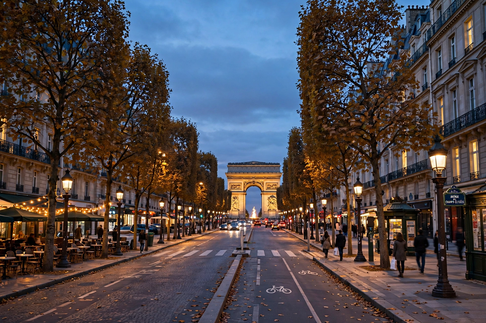

Champs-Élysées
From Wikipedia, the free encyclopedia
| Avenue des Champs-Élysées | |
|---|---|
 | |
| Location | 8th arrondissement, Paris, France |
| Length | 1.9 km (1.2 mi) |
| Width | 70 m (230 ft) |
| From | Place de la Concorde |
| To | Place Charles de Gaulle (Arc de Triomphe) |
The Avenue des Champs-Élysées is an avenue in the 8th arrondissement of Paris, France, 1.9 kilometres long and 70 metres wide, running between the Place de la Concorde in the east and the Place Charles de Gaulle in the west, where the Arc de Triomphe is located. It is known for its theatres, cafés and luxury shops, as the finish of the Tour de France cycling race, and for the annual Bastille Day military parade — the oldest and largest regular military parade in Europe.
History
The avenue began as fields and market gardens beyond the Tuileries. In 1667 landscape architect André Le Nôtre extended the Tuileries axis westward with tree-lined walks; the name Champs-Élysées ("Elysian Fields") was adopted in the early 18th century. The Arc de Triomphe, commissioned by Napoleon in 1806, crowned the western end. Under Baron Haussmann's renovation of Paris the avenue took its modern form, and it became the symbolic axis — the Axe historique — running from the Louvre through La Défense.
Description
The lower section, from the Concorde to the Rond-Point, runs through gardens adorned with fountains, the Grand Palais and Petit Palais (built for the 1900 Exposition Universelle), and the Élysée Palace nearby — residence of the President of the Republic. The upper section is lined with flagship stores, cinemas, airline offices and famous cafés such as Fouquet's. Celebrations of liberation in 1944 and World Cup victories in 1998 and 2018 drew enormous crowds to the avenue.
Events
Since 1975 the Tour de France has finished on the Champs-Élysées with laps before the sprint finish. Every 14 July the Bastille Day parade descends the avenue. In recent decades the avenue has also been a focal point of protest, including the gilets jaunes movement of 2018–19. See also Paris and, for comparison, Knez Mihailova Street in Belgrade.